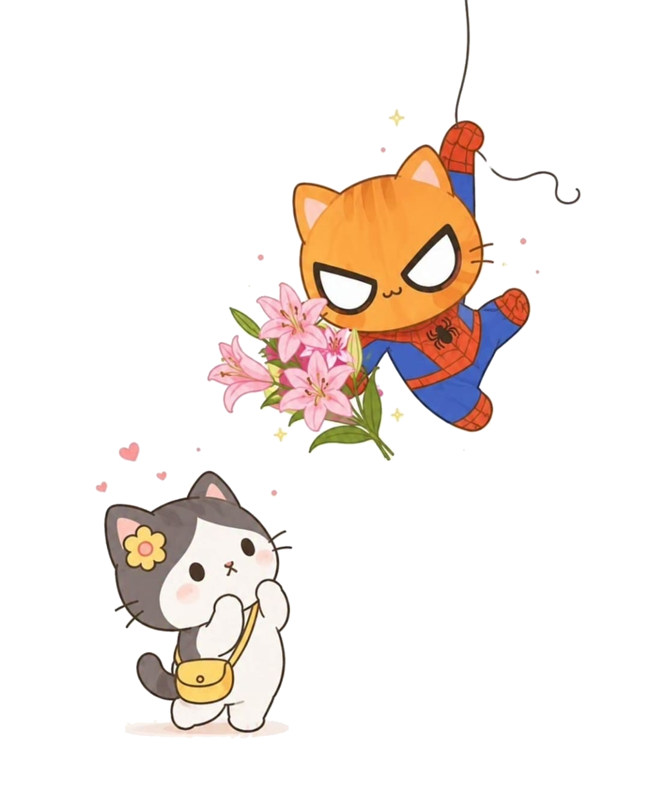
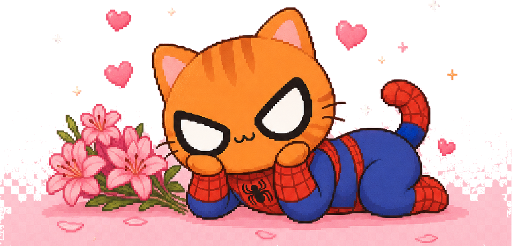

♡ Carta para Maria!! ♡
Gracias por llegar hasta aquí.

Querida María:
Hoy es 1 de agosto, un día en el que muchas personas regalan flores para recordarle a alguien lo especial que es.
Me habría encantado poder entregárselas personalmente. Poder verla sonreír mientras las recibe y decirle todo esto frente a frente. Pero, por ahora, la distancia decidió que estas flores viajaran de una manera diferente. Por eso hice este pequeño espacio para usted.
Sé que no somos pareja.
Y precisamente por eso quería que cada palabra que leyera fuera sincera. No busco hacer promesas que aún no nos corresponden, ni apresurar algo que merece su tiempo. Solo quiero decirle lo que muchas veces pienso cuando hablamos.
Me gusta conocerla.
Me gusta descubrir un poco más de usted en cada conversación, escucharla, reír con usted y terminar el día con la sensación de que hablarle siempre vale la pena.
Y hay detalles de usted que, aunque parezcan pequeños, para mí son imposibles de ignorar.
Sus ojos tienen una calma difícil de explicar. Cada vez que veo una fotografía suya o la miro durante una videollamada, termino pensando que podría quedarme observándolos mucho más tiempo del que debería.
Y sus lunares... quizá para usted sean solo una parte más de su rostro, pero para mí son esos pequeños detalles que la hacen única. Son como esas estrellas diminutas que uno descubre cuando observa el cielo con atención: no todos las notan, pero cuando las descubre, ya no puede dejar de admirarlas.
No sé qué nos tenga preparado el futuro.
No sé si algún día podré llegar con un ramo de flores de verdad y entregárselo personalmente.
Lo que sí sé es que conocerla ha sido una de esas coincidencias que agradezco profundamente.
Quiero seguir conociéndola, seguir compartiendo momentos con usted y dejar que el tiempo haga lo suyo, sin prisas y sin presiones, porque creo que las cosas bonitas merecen construirse con calma.
Hoy estas flores son una pequeña forma de decirle que alguien, aunque esté lejos, piensa en usted con una sonrisa.
Y que, entre todas las personas con las que pude haber coincidido, me alegra muchísimo que haya sido usted.
Gracias por estar aquí.
Espero que este detalle le robe una sonrisa, aunque sea por unos minutos.
Feliz 1 de agosto, María.
Con mucho cariño,
Dave 🌻
"La distancia puede impedirme entregarle flores con mis propias manos, pero nunca impedirá que encuentre una manera de recordarle lo especial que es para mí."
{kind=link}